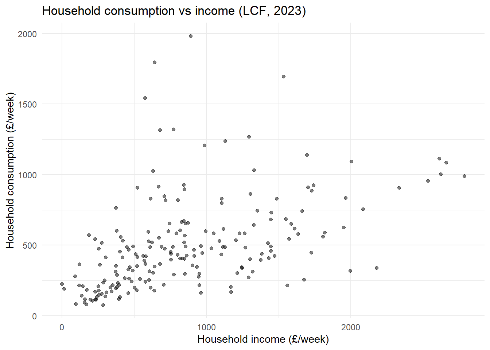
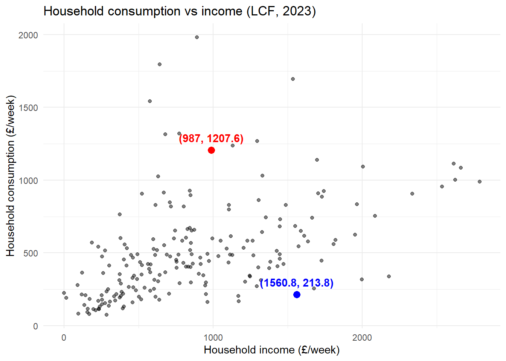
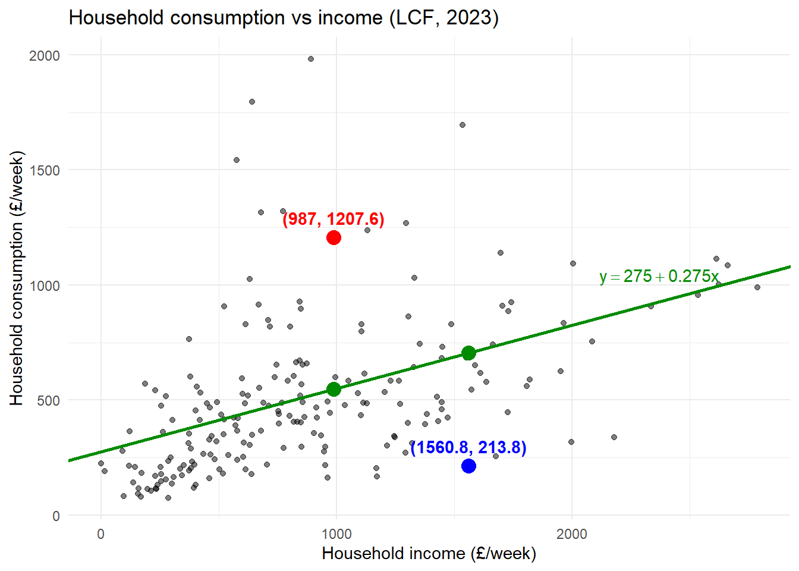
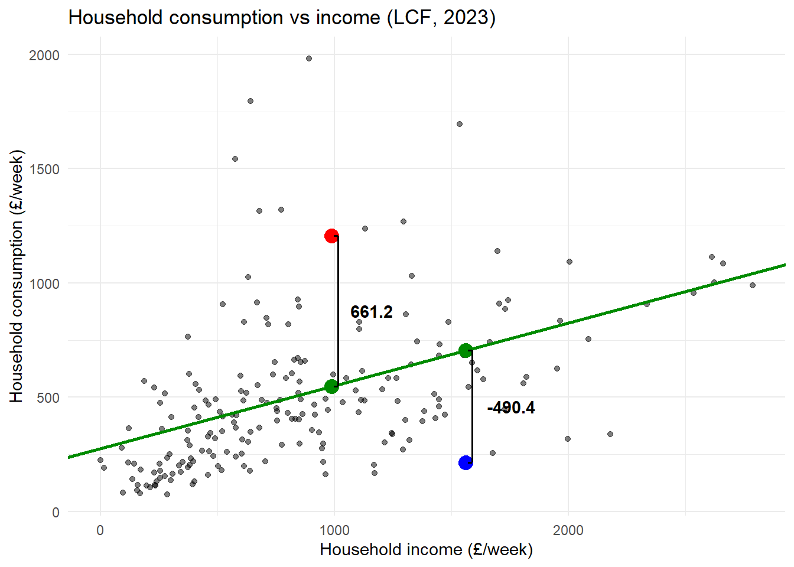
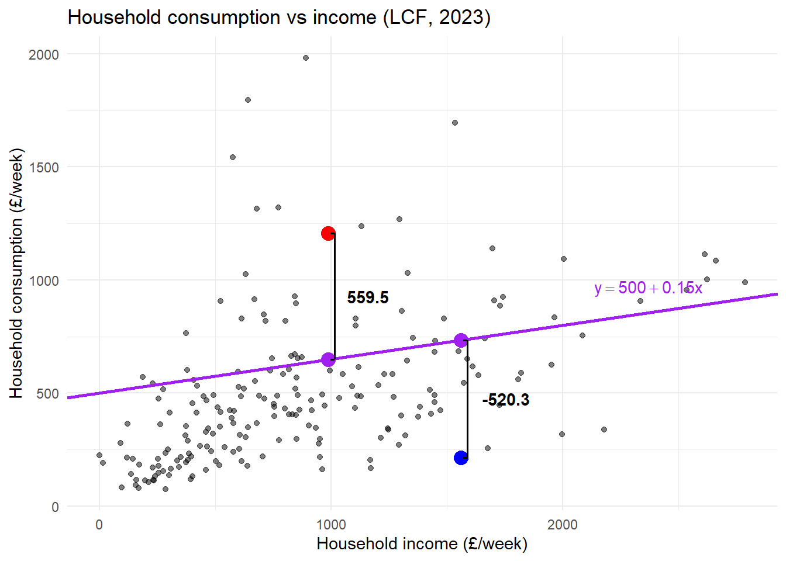
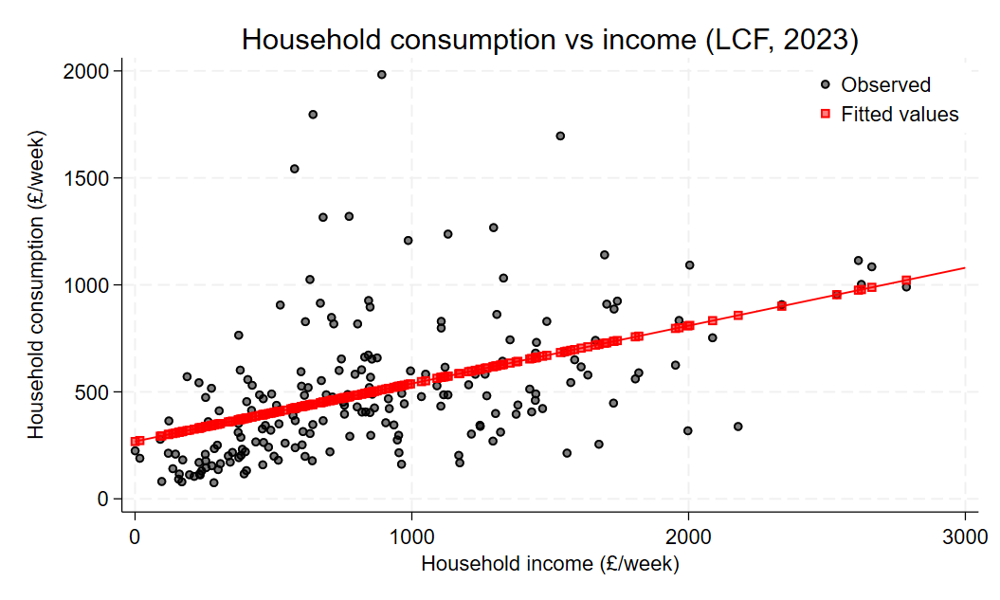
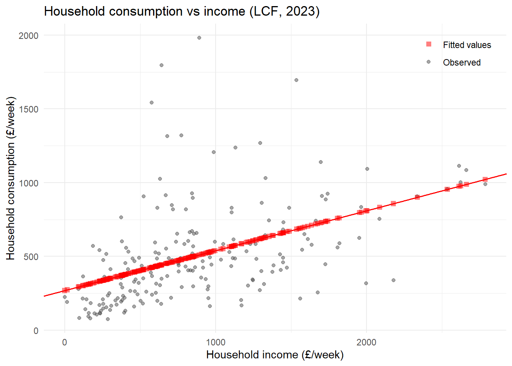
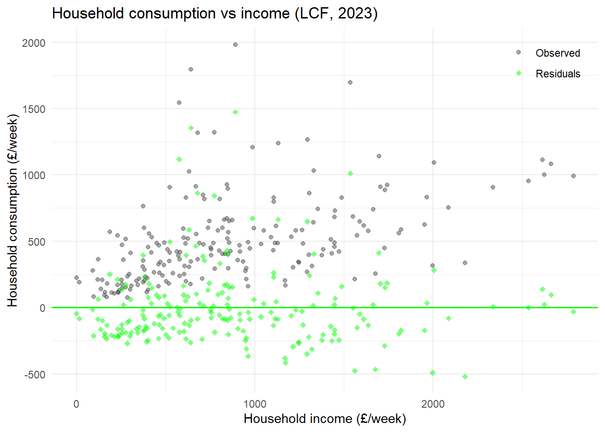

Code
* Open data
use "$data_dir\lcf_2023.dta", clear
* Plot
scatter hhcon hhinc, mc(black) mfc(%50) ytitle("Household consumption (£/week)") xtitle("Household income (£/week)") title("Household consumption vs income (LCF, 2023)")

Lecture 2
This lecture covers material from Wooldridge (2025):
The lecture does not cover Chapter 2.6 “Regression through the Origin and Regression on a Constant”. I would suggest reading the section, but we will not have time to cover it.
For each observation we observe:
\[ [y_i, x_{i1}, x_{i2}, \dots, x_{ik}] \quad i = 1, \dots, n \]
Stacked together, we have a matrix of data:
\[ \begin{bmatrix} y_1 & x_{11} & x_{12} & \dots & x_{1k} \\ y_2 & x_{21} & x_{22} & \dots & x_{2k} \\ \vdots & \vdots & \vdots & \ddots & \vdots \\ y_n & x_{n1} & x_{n2} & \dots & x_{nk} \\ \end{bmatrix} \]
Just like in Stata/R
Suppose you wanted to estimate the the marginal propensity to consume in the UK using data from the Living Costs and Food Survey:
\[ [cons_i, inc_i, children_i,size_i,tv\_license_i,month_i] \quad i = 1, \dots, n \]
Does the relationship between consumption and income look linear?
* Open data
use "$data_dir\lcf_2023.dta", clear
* Plot
scatter hhcon hhinc, mc(black) mfc(%50) ytitle("Household consumption (£/week)") xtitle("Household income (£/week)") title("Household consumption vs income (LCF, 2023)")
# Load the Stata file
lcf_data <- read_dta(file.path(data_dir, "lcf_2023.dta"))
# Plot
ggplot(lcf_data, aes(x = hhinc, y = hhcon)) +
geom_point(alpha = 0.5) +
labs(x = "Household income (£/week)",
y = "Household consumption (£/week)",
title = "Household consumption vs income (LCF, 2023)") +
theme_minimal()
Consider the following two observations:

Suppose we plot a line through the points:

The vertical distance between points in the data and the line tells us how the difference between the “prediction” of the line (for a given \(inc_i\)) and the actual data.

What if we chose a different plot?

Which guess was better? Why?
Let’s formalize the above process:
Problem: what do we mean by “fit”?
\[ \widehat{cons}_i = b_0 + b_1 inc_i \]
where \([b_0,b_1]\) are the chosen parameters.
For example,
\(\textcolor{green}{\widehat{cons}_i = 275 + 0.275 inc_i}\)
\(\textcolor{purple}{\widehat{cons}_i = 500 + 0.15 inc_i}\)
We need a measure of distance:
Candidate 1: difference
\[ cons_i - \widehat{cons}_i \]
Candidate 2: absolute value
\[ |cons_i - \widehat{cons}_i| \]
Candidate 3: squared deviation
\[ (cons_i - \widehat{cons}_i)^2 \]
What we care about is the difference between the prediction and data across all observations:
\[ \sum_{i=1}^{n}(cons_i - \widehat{cons}_i)^2 \]
And since \(\widehat{cons}_i = b_0 + b_1 inc_i\)
\[ \sum_{i=1}^{n}(cons_i - b_0 - b_1 inc_i)^2 \]
The value of these squared deviations (from the prediction) depend on \([b_0,b_1]\). It seems intuitive then to pick the values that minimize this value:
\[ \underset{b_0,b_1}{\min} \quad\sum_{i=1}^{n}(cons_i - b_0 - b_1 inc_i)^2 \]
Minimization problem:
\[ \hat{\beta}=\underset{b}{\arg\min} \quad\sum_{i=1}^{n}(y_i - b_0 - b_1x_{i1}-\dots-b_kx_{ik})^2 \]
where \(\hat{\beta} = [\hat{\beta}_0,\hat{\beta}_1,\dots,\hat{\beta}_k]\) and \(b=[b_0,b_1,\dots,b_k]\).
Differentiate w.r.t. \(b_j\)’s and then set to 0. For \(\hat{\beta}_0\) (the constant):
\[ \begin{aligned} & 0=2\sum_{i=1}^{n}(y_i - \hat{\beta}_0 - \hat{\beta}_1x_{i1}-\dots-\hat{\beta}_kx_{ik}) \\ \Rightarrow \quad & 0=\frac{1}{n}\sum_{i=1}^{n}(y_i - \hat{\beta}_0 - \hat{\beta}_1x_{i1}-\dots-\hat{\beta}_kx_{ik}) \\ \Rightarrow \quad & \hat{\beta}_0 = \bar{y} - \hat{\beta}_1\bar{x}_{1}-\dots-\hat{\beta}_k\bar{x}_{k} \end{aligned} \]
The inclusion of a constant in the model ensures that the residual is always mean zero:
\[ 0=\sum_{i=1}^{n}(y_i - \hat{\beta}_0 - \hat{\beta}_1x_{i1}-\dots-\hat{\beta}_kx_{ik})=\sum_{i=1}^{n}\hat{u}_i \]
For \(\hat{\beta}_j\quad j=1,\dots,k\)
\[ \begin{aligned} & 0=2\sum_{i=1}^{n}(y_i - \hat{\beta}_0 - \hat{\beta}_1x_{i1}-\dots-\hat{\beta}_kx_{ik})x_{ij} \\ \Rightarrow \quad &0= \sum_{i=1}^{n}(y_i - \hat{\beta}_0 - \hat{\beta}_1x_{i1}-\dots-\hat{\beta}_kx_{ik})x_{ij} \end{aligned} \]
There are \(k\) of these first-order conditions (plus the 1 for the constant)
\(\Rightarrow\) \(k+1\) equations and \(k+1\) unknowns.
In the case of a single regressor, the solution is more easily solved.
\[ \hat{\beta}_0 = \bar{y} - \hat{\beta}_1\bar{x} \]
\[ \begin{aligned} & 0=2\sum_{i=1}^{n}(y_i - \hat{\beta}_0 - \hat{\beta}_1x_{i})x_{i} \\ \Rightarrow \quad & 0=\sum_{i=1}^{n}\big(y_i - (\textcolor{blue}{\bar{y} - \hat{\beta}_1\bar{x}}) - \hat{\beta}_1x_{i}\big)x_{i} \qquad \text{substitute in}\quad \textcolor{blue}{\hat{\beta}_0}\\ \Rightarrow \quad & 0=\sum_{i=1}^{n}\big((y_i -\bar{y}) - \hat{\beta}_1(x_{i}-\bar{x})\big)x_{i} \end{aligned} \]
The next step exploits the fact that:
\[ \sum_{i=1}^{n}\hat{u}_i=0 \Rightarrow \bar{x}\sum_{i=1}^{n}\hat{u}_i=0 \Rightarrow \textcolor{red}{\sum_{i=1}^{n}\hat{u}_i\bar{x}}=0 \]
Therefore we can minus 0 from the right-hand side without changing anything.
\[ \begin{aligned} & 0=\sum_{i=1}^{n}\big(\underbrace{(y_i -\bar{y}) - \hat{\beta}_1(x_{i}-\bar{x})}_{\hat{u}_i}\big)x_{i} -\textcolor{red}{\sum_{i=1}^{n}\hat{u}_i\bar{x}}\\ \Rightarrow \quad & 0=\sum_{i=1}^{n}\big((y_i -\bar{y}) - \hat{\beta}_1(x_{i}-\bar{x})\big)(x_{i}-\bar{x}) \\ \Rightarrow \quad & \hat{\beta}_1 = \frac{\sum_{i=1}^{n}(y_i -\bar{y})(x_{i}-\bar{x})}{\sum_{i=1}^{n}(x_{i}-\bar{x})^2} = \frac{\widehat{Cov}(y_i,x_i)}{\widehat{Var}(x_i)} \end{aligned} \]
The above expression - along with its multivariate counterpart - has a very nice linear algebra counterpart. The vector of OLS estimators (including the intercept) is given by,
\[ \hat{\beta} = (X'X)^{-1}X'Y \]
Where \(X\) is a \(n\times (k+1)\) matrix of regressors (including vector of \(1\)’s for the intercept) and \(Y\) a \(n\times 1\) vector. It’s a very simple expression and demonstrates the value of knowing a little linear algebra. This how you define the OLS estimator in graduate-level modules like EC5207 Econometric Methods and Applications.
Recall from Lecture 1, under the MLR assumptions (notably, \(E[x_iu_i]=0\))
\[ \begin{aligned} \beta_1 =& \frac{Cov(y_i,x_i)}{Var(x_i)} \\ \beta_0 =& E[y_i]-\beta_1E[x_i] \end{aligned} \]
The OLS estimators for a simple model are the sample analogue
\[ \begin{aligned} \hat{\beta}_1 =& \frac{\widehat{Cov}(y_i,x_i)}{\widehat{Var}(x_i)} \\ \hat{\beta}_0 =& \bar{y} - \hat{\beta}_1\bar{x} \end{aligned} \]
OLS replaces expectations with sample averages.
Given the OLS estimates, we can decompose the outcome into two parts: fitted values (\(\hat{y}_i\)) and residual (\(\hat{u}_i\))
\[ y_i = \underbrace{\hat{\beta_0} + \hat{\beta_1} x_i}_{\hat{y}_i} + \hat{u}_i \]
You can show,
\(\sum_{i=1}^{n} \hat{u}_i=0\): residuals are mean zero
\(\sum_{i=1}^{n} x_i\hat{u}_i=0\): residuals and regressors are uncorrelated
\(\sum_{i=1}^{n} \hat{y}_i\hat{u}_i=0\): residuals and fitted values are uncorrelated
\(\sum_{i=1}^{n} \hat{y}_i = \sum_{i=1}^{n} y_i\): fitted values have the same mean as outcome
\(\sum_{i=1}^{n} y_i\hat{u}_i=\sum_{i=1}^{n} (\hat{y}_i+\hat{u}_i)\hat{u}_i=\sum_{i=1}^{n} \hat{u}_i^2\)
Some of these are exercises in Tutorial 1
The \(\hat{y}_i = \hat{\beta_0} + \hat{\beta_1} x_i\) also gives us the interpration of the estimator:
\[ \hat{\beta}_1 = \frac{d \hat{y}_i}{d x_i}\quad \text{OR}\quad \Delta \hat{y}_i = \hat{\beta}_1 \Delta x_i \]
and
\[ \hat{\beta}_0 = \hat{y}_i\quad \text{for}\; x_i = 0 \]
* Estimate bivariate linear regression
regress hhcon hhinc Source | SS df MS Number of obs = 200
-------------+---------------------------------- F(1, 198) = 57.08
Model | 4842359.39 1 4842359.39 Prob > F = 0.0000
Residual | 16798378.5 198 84840.2954 R-squared = 0.2238
-------------+---------------------------------- Adj R-squared = 0.2198
Total | 21640737.9 199 108747.427 Root MSE = 291.27
------------------------------------------------------------------------------
hhcon | Coefficient Std. err. t P>|t| [95% conf. interval]
-------------+----------------------------------------------------------------
hhinc | .2705895 .0358165 7.55 0.000 .1999587 .3412203
_cons | 268.0611 37.42847 7.16 0.000 194.2515 341.8707
------------------------------------------------------------------------------# Estimate bivariate linear regression
model1 <- lm(hhcon ~ hhinc, data = lcf_data)
# View results
summary(model1)
Call:
lm(formula = hhcon ~ hhinc, data = lcf_data)
Residuals:
Min 1Q Median 3Q Max
-519.70 -177.46 -60.08 95.78 1473.71
Coefficients:
Estimate Std. Error t value Pr(>|t|)
(Intercept) 268.06105 37.42847 7.162 1.53e-11 ***
hhinc 0.27059 0.03582 7.555 1.52e-12 ***
---
Signif. codes: 0 '***' 0.001 '**' 0.01 '*' 0.05 '.' 0.1 ' ' 1
Residual standard error: 291.3 on 198 degrees of freedom
Multiple R-squared: 0.2238, Adjusted R-squared: 0.2198
F-statistic: 57.08 on 1 and 198 DF, p-value: 1.515e-12* Generate fitted values and residuals
predict fitted
predict residual, resid* Compute averages
sum hhcon fitted residual Variable | Obs Mean Std. dev. Min Max
-------------+---------------------------------------------------------
hhcon | 200 504.1663 329.7687 75.16 1983.02
fitted | 200 504.1663 155.9919 268.1639 1022.213
residual | 200 -1.28e-07 290.5408 -519.6953 1473.709* Compute variance-covariance matrix
corr hhcon fitted residual, cov(obs=200)
| hhcon fitted residual
-------------+---------------------------
hhcon | 108747
fitted | 24333.5 24333.5
residual | 84414 -.000076 84414# Get fitted values and residuals
reg_vals <- data.frame(
hhcon = lcf_data$hhcon,
fitted = fitted(model1),
resid = residuals(model1)
)# Compute averages
colMeans(reg_vals) hhcon fitted resid
5.041663e+02 5.041663e+02 2.611245e-14 # Compute variance-covariance matrix
var(reg_vals) hhcon fitted resid
hhcon 108747.43 2.433346e+04 8.441396e+04
fitted 24333.46 2.433346e+04 2.331285e-12
resid 84413.96 2.331285e-12 8.441396e+04* Plot
twoway (scatter hhcon hhinc, mc(black) mfc(%50)) (scatter fitted hhinc, mc(red) mfc(%50) msize(small) ms(S)) (function y = _b[_cons] + _b[hhinc]*x, lc(red) lp(solid) range(0 3000)), ytitle("Household consumption (£/week)") xtitle("Household income (£/week)") title("Household consumption vs income (LCF, 2023)") legend(order(1 "Observed" 2 "Fitted values") r(2) pos(2) ring(0))
# Data frame with the x-variable plus fitted values and residuals
plot_vals <- data.frame(
hhinc = model.frame(model1)$hhinc, # exactly the rows lm() used
hhcon = model.frame(model1)$hhcon,
fitted = fitted(model1),
resid = residuals(model1)
)
# Plot
ggplot(plot_vals, aes(x = hhinc, y = hhcon)) +
geom_point(aes(colour = "Observed"), alpha = 0.5) +
geom_point(aes(y = fitted, colour = "Fitted values"), shape = 15, size = 2, alpha = 0.5) +
geom_abline(intercept = coef(model1)[1], slope = coef(model1)[2],
colour = "red", linewidth = 0.7) +
scale_colour_manual(values = c("Observed" = "grey30",
"Fitted values" = "red")) +
labs(x = "Household income (£/week)",
y = "Household consumption (£/week)",
title = "Household consumption vs income (LCF, 2023)",
colour = NULL) +
theme_minimal() +
theme(legend.position = c(0.98, 0.98),
legend.justification = c(1, 1))
* Plot
twoway (scatter hhcon hhinc, mc(black) mfc(%50)) (scatter residual hhinc, mc(green) mfc(%50) msize(small) ms(D)), ytitle("Household consumption (£/week)") xtitle("Household income (£/week)") title("Household consumption vs income (LCF, 2023)") legend(order(1 "Observed" 2 "Residuals") r(2) pos(2) ring(0)) yline(0, lc(green) lp(solid))
# Data frame with the x-variable plus fitted values and residuals
plot_vals <- data.frame(
hhinc = model.frame(model1)$hhinc, # exactly the rows lm() used
hhcon = model.frame(model1)$hhcon,
fitted = fitted(model1),
resid = residuals(model1)
)
# Plot
ggplot(plot_vals, aes(x = hhinc, y = hhcon)) +
geom_point(aes(colour = "Observed"), alpha = 0.5) +
geom_point(aes(y = resid, colour = "Residuals"), shape = 18, size = 2, alpha = 0.5) +
geom_hline(yintercept = 0, colour = "green", linewidth = 0.7) +
scale_colour_manual(values = c("Observed" = "grey30",
"Residuals" = "green")) +
labs(x = "Household income (£/week)",
y = "Household consumption (£/week)",
title = "Household consumption vs income (LCF, 2023)",
colour = NULL) +
theme_minimal() +
theme(legend.position = c(0.98, 0.98),
legend.justification = c(1, 1))
What happens if the regressor is a ‘dummy’ variable?
\[ [hhcons_i, children_i] \]
where \(children_i\)
* Summary table
tab children, sum(hhcon) | Summary of COICOP: Total
| consumption expenditure - children
| and adults
children | Mean Std. dev. Freq.
------------+------------------------------------
0 | 481.09786 342.33194 151
1 | 575.2546 278.91476 49
------------+------------------------------------
Total | 504.16626 329.76875 200# Summary table
tapply(lcf_data$hhcon, lcf_data$children, mean, na.rm = TRUE) 0 1
481.0979 575.2546 * Estimate bivariate linear regression
reg hhcon children Source | SS df MS Number of obs = 200
-------------+---------------------------------- F(1, 198) = 3.05
Model | 327978.835 1 327978.835 Prob > F = 0.0824
Residual | 21312759 198 107640.197 R-squared = 0.0152
-------------+---------------------------------- Adj R-squared = 0.0102
Total | 21640737.9 199 108747.427 Root MSE = 328.09
------------------------------------------------------------------------------
hhcon | Coefficient Std. err. t P>|t| [95% conf. interval]
-------------+----------------------------------------------------------------
children | 94.15674 53.94059 1.75 0.082 -12.21506 200.5285
_cons | 481.0979 26.69923 18.02 0.000 428.4465 533.7492
------------------------------------------------------------------------------# Estimate bivariate linear regression
model_dummy <- lm(hhcon ~ children, data=lcf_data)
summary(model_dummy)
Call:
lm(formula = hhcon ~ children, data = lcf_data)
Residuals:
Min 1Q Median 3Q Max
-405.94 -248.78 -60.47 110.39 1501.92
Coefficients:
Estimate Std. Error t value Pr(>|t|)
(Intercept) 481.10 26.70 18.019 <2e-16 ***
children 94.16 53.94 1.746 0.0824 .
---
Signif. codes: 0 '***' 0.001 '**' 0.01 '*' 0.05 '.' 0.1 ' ' 1
Residual standard error: 328.1 on 198 degrees of freedom
Multiple R-squared: 0.01516, Adjusted R-squared: 0.01018
F-statistic: 3.047 on 1 and 198 DF, p-value: 0.08244You can show,
\[ \begin{aligned} \hat{\beta}_1 =& \bar{y}_1-\bar{y}_0 \\ \hat{\beta}_0 =& \bar{y}_0 \end{aligned} \]
where,
Yields a very intuitive interpretation of the OLS estimator
This is the sample analogue of
\[ \begin{aligned} \beta_1 =& E[y_i|x_i=1]-E[y_i|x_i=0] \\ \beta_0 =& E[y_i|x_i=0] \end{aligned} \]
Which was the interpretation of the population parameter in a model with a binary (‘dummy’) variable.
What happens if you have two regressors
\[ [hhcons_i, hhinc_i, children, hhsize_i] \]
* Estimate bivariate linear regression
reg hhcon hhinc children hhsize Source | SS df MS Number of obs = 200
-------------+---------------------------------- F(3, 196) = 27.93
Model | 6480977.84 3 2160325.95 Prob > F = 0.0000
Residual | 15159760 196 77345.7144 R-squared = 0.2995
-------------+---------------------------------- Adj R-squared = 0.2888
Total | 21640737.9 199 108747.427 Root MSE = 278.11
------------------------------------------------------------------------------
hhcon | Coefficient Std. err. t P>|t| [95% conf. interval]
-------------+----------------------------------------------------------------
hhinc | .1937248 .0382801 5.06 0.000 .1182311 .2692185
children | -238.3538 74.84546 -3.18 0.002 -385.9596 -90.74795
hhsize | 125.7418 27.57406 4.56 0.000 71.36187 180.1217
_cons | 121.2957 47.91901 2.53 0.012 26.79261 215.7987
------------------------------------------------------------------------------# Estimate bivariate linear regression
model_multi <- lm(hhcon ~ hhinc + children + hhsize, data=lcf_data)
summary(model_multi)
Call:
lm(formula = hhcon ~ hhinc + children + hhsize, data = lcf_data)
Residuals:
Min 1Q Median 3Q Max
-456.92 -168.81 -58.49 96.59 1437.52
Coefficients:
Estimate Std. Error t value Pr(>|t|)
(Intercept) 121.29566 47.91901 2.531 0.01215 *
hhinc 0.19372 0.03828 5.061 9.58e-07 ***
children -238.35377 74.84546 -3.185 0.00169 **
hhsize 125.74181 27.57406 4.560 8.99e-06 ***
---
Signif. codes: 0 '***' 0.001 '**' 0.01 '*' 0.05 '.' 0.1 ' ' 1
Residual standard error: 278.1 on 196 degrees of freedom
Multiple R-squared: 0.2995, Adjusted R-squared: 0.2888
F-statistic: 27.93 on 3 and 196 DF, p-value: 4.407e-15Interpretation follows from the fact that,
\[ \hat{y}_i = \hat{\beta}_0 + \hat{\beta}_1 x_{i1} + \hat{\beta}_2 x_{i2} + \dots + \hat{\beta}_k x_{ik} \]
\[ \hat{\beta}_j = \frac{\partial \hat{y}_i}{\partial x_{ij}} \]
or
\[ \Delta \hat{y}_i = \hat{\beta}_j \Delta x_{ij} \quad \text{holding other }x\text{'s fixed} \]
The following result is called the Frisch-Waugh Theorem (Wooldridge 2025, 76)
The OLS estimate for \(\hat{\beta}_1\) from the multivariate ‘projection’
\[ \hat{y}_i = \hat{\beta}_0 + \hat{\beta}_1 x_{i1} + \hat{\beta}_2 x_{i2} + \dots + \hat{\beta}_k x_{ik} \]
is the same as the OLS estimate for \(\hat{\gamma}_1\) simple ‘projection’
\[ \hat{\tilde{y}}_i = \hat{\gamma}_0 + \hat{\gamma}_1 \tilde{x}_{i1} \]
Why the phrase ‘projection’? One interpretation of OLS is geometric. The estimator ‘projects’ the outcome (\(Y\)) in the (vector) space spanned by the regressors (columns of \(X\)).
\[ \hat{Y}=X\hat{\beta} = \underbrace{X(X'X)^{-1}X'}_{P_X}Y \]
The predicted value of \(Y\) is just a ‘projection’ of \(Y\): \(P_X Y\). \(P_X\) is an idempotent projection matrix. The residual then is,
\[ \hat{U} = Y-\hat{Y} = Y-P_X Y = (\underbrace{I-P_X}_{M_X})Y \]
\(M_X\) is another idempotent projection matrix. And crucially, \(M_XP_X = 0\): the two projections are orthogonal. So, OLS projects Y into two vector spaces: one spanned (‘explained by’) \(X\) and another orthogonal to that space. The predicted values and residuals are mechanically orthogonal, which means that they are perfectly uncorrelated in the data.
where,
\[ \tilde{x}_{i1} = x_{i1} -( \hat{\rho}_0 + \hat{\rho}_1x_{i2} + \dots + \hat{\rho}_{k-1}x_{ik}) \]
and,
\[ \tilde{y}_{i} = y_{i} -( \hat{\psi}_0 + \hat{\psi}_1x_{i2} + \dots + \hat{\psi}_{k-1}x_{ik}) \]
* Estimate bivariate linear regression
qui reg hhinc children hhsize
predict hhinc_tilde, resid
qui reg hhcon children hhsize
predict hhcon_tilde, resid
reg hhcon_tilde hhinc_tilde Source | SS df MS Number of obs = 200
-------------+---------------------------------- F(1, 198) = 25.87
Model | 1980895.01 1 1980895.01 Prob > F = 0.0000
Residual | 15159759.9 198 76564.4441 R-squared = 0.1156
-------------+---------------------------------- Adj R-squared = 0.1111
Total | 17140654.9 199 86133.9444 Root MSE = 276.7
------------------------------------------------------------------------------
hhcon_tilde | Coefficient Std. err. t P>|t| [95% conf. interval]
-------------+----------------------------------------------------------------
hhinc_tilde | .1937248 .0380862 5.09 0.000 .1186181 .2688315
_cons | -2.04e-08 19.56584 -0.00 1.000 -38.58418 38.58418
------------------------------------------------------------------------------# Estimate bivariate linear regression
model_f1 <- lm(hhinc ~ children + hhsize, data=lcf_data)
model_f2 <- lm(hhcon ~ children + hhsize, data=lcf_data)
frisch <- data.frame(
hhinc_tilde = residuals(model_f1),
hhcon_tilde = residuals(model_f2)
)
model_frisch <- lm(hhcon_tilde ~ hhinc_tilde, data = frisch)
summary(model_frisch)
Call:
lm(formula = hhcon_tilde ~ hhinc_tilde, data = frisch)
Residuals:
Min 1Q Median 3Q Max
-456.92 -168.81 -58.49 96.59 1437.52
Coefficients:
Estimate Std. Error t value Pr(>|t|)
(Intercept) -2.673e-14 1.957e+01 0.000 1
hhinc_tilde 1.937e-01 3.809e-02 5.086 8.44e-07 ***
---
Signif. codes: 0 '***' 0.001 '**' 0.01 '*' 0.05 '.' 0.1 ' ' 1
Residual standard error: 276.7 on 198 degrees of freedom
Multiple R-squared: 0.1156, Adjusted R-squared: 0.1111
F-statistic: 25.87 on 1 and 198 DF, p-value: 8.437e-07How well did we fit the data?
We have decomposed each observation into two parts:
\[ y_i = \underbrace{\hat{y}_i}_\text{fitted values} + \underbrace{\hat{u}_i}_\text{residual} \]
We can apply this decomposition to the total sum of squares (SST)
\[ \text{SST} \equiv \sum_{i=1}^n (y_i-\bar{y})^2 \]
We can show that (see Wooldridge 2025, 33–34),
\[ \text{SST} = \text{SSE} + \text{SSR} \]
where,
\[ \text{SSE} \equiv \sum_{i=1}^n (\hat{y}_i-\bar{y})^2 \]
\[ \text{SSR} \equiv \sum_{i=1}^n \hat{u}_i^2 \]
One key measure of fit then is:
\[ \mathbf{R}^2 = \frac{\text{SSE}}{\text{SST}} = 1-\frac{\text{SSR}}{\text{SST}} \]
This measure captures the share of the variance in the outcome variable explained by the regressors.
Many students make the mistake of thinking that higher \(\mathbf{R}^2\) is always better. Here are reasons this need not be the case:
In social sciences, the DGP is often very complex and we don’t observe many explanatory variables.
If we care about the relationship between \(y\) and a specific \(x_j\), we do not necessarily care about explaining all of \(y\).
We can always add variables and (mechanically) increase \(\mathbf{R}^2\); however, this comes at a potential cost:
we MAY inadvertantly increase the variance of our estimates (e.g., irrelevant variables)
we MAY end up adding “bad controls”
An alternative measure fit is the adjusted \(\mathbf{R}^2\):
\[ \overline{\mathbf{R}}^2 = 1 - \frac{\text{SSR}/(n-k-1)}{\text{SST}/(n-1)} = 1 - (1-\mathbf{R}^2)\times\frac{(n-1)}{(n-k-1)} \]
where,
As you increase \(k\), you decrease \(\overline{\mathbf{R}}^2\)
.29948045
.28875821[1] 0.2994804[1] 0.2887582reg hhcon hhinc hhsize children month tvlicense Source | SS df MS Number of obs = 200
-------------+---------------------------------- F(5, 194) = 16.91
Model | 6568404.46 5 1313680.89 Prob > F = 0.0000
Residual | 15072333.4 194 77692.4403 R-squared = 0.3035
-------------+---------------------------------- Adj R-squared = 0.2856
Total | 21640737.9 199 108747.427 Root MSE = 278.73
------------------------------------------------------------------------------
hhcon | Coefficient Std. err. t P>|t| [95% conf. interval]
-------------+----------------------------------------------------------------
hhinc | .1911845 .0385338 4.96 0.000 .1151854 .2671835
hhsize | 124.161 27.71213 4.48 0.000 69.50531 178.8168
children | -233.0088 75.21666 -3.10 0.002 -381.3562 -84.66142
month | -1.276233 6.234806 -0.20 0.838 -13.57294 11.02047
tvlicense | 59.82271 56.57194 1.06 0.292 -51.7523 171.3977
_cons | 82.86154 77.50891 1.07 0.286 -70.00675 235.7298
------------------------------------------------------------------------------model_irrel <- lm(hhcon ~ hhinc + hhsize + children + month + tvlicense, data = lcf_data)
summary(model_irrel)
Call:
lm(formula = hhcon ~ hhinc + hhsize + children + month + tvlicense,
data = lcf_data)
Residuals:
Min 1Q Median 3Q Max
-468.33 -163.40 -53.35 84.28 1434.32
Coefficients:
Estimate Std. Error t value Pr(>|t|)
(Intercept) 82.86154 77.50891 1.069 0.28637
hhinc 0.19118 0.03853 4.961 1.53e-06 ***
hhsize 124.16104 27.71213 4.480 1.27e-05 ***
children -233.00879 75.21666 -3.098 0.00224 **
month -1.27623 6.23481 -0.205 0.83803
tvlicense 59.82271 56.57194 1.057 0.29162
---
Signif. codes: 0 '***' 0.001 '**' 0.01 '*' 0.05 '.' 0.1 ' ' 1
Residual standard error: 278.7 on 194 degrees of freedom
Multiple R-squared: 0.3035, Adjusted R-squared: 0.2856
F-statistic: 16.91 on 5 and 194 DF, p-value: 7.335e-14Are these the “right” numbers?
Source | SS df MS Number of obs = 200
-------------+---------------------------------- F(1, 198) = 57.08
Model | 4842359.39 1 4842359.39 Prob > F = 0.0000
Residual | 16798378.5 198 84840.2954 R-squared = 0.2238
-------------+---------------------------------- Adj R-squared = 0.2198
Total | 21640737.9 199 108747.427 Root MSE = 291.27
------------------------------------------------------------------------------
hhcon | Coefficient Std. err. t P>|t| [95% conf. interval]
-------------+----------------------------------------------------------------
hhinc | .2705895 .0358165 7.55 0.000 .1999587 .3412203
_cons | 268.0611 37.42847 7.16 0.000 194.2515 341.8707
------------------------------------------------------------------------------
Call:
lm(formula = hhcon ~ hhinc, data = lcf_data)
Residuals:
Min 1Q Median 3Q Max
-519.70 -177.46 -60.08 95.78 1473.71
Coefficients:
Estimate Std. Error t value Pr(>|t|)
(Intercept) 268.06105 37.42847 7.162 1.53e-11 ***
hhinc 0.27059 0.03582 7.555 1.52e-12 ***
---
Signif. codes: 0 '***' 0.001 '**' 0.01 '*' 0.05 '.' 0.1 ' ' 1
Residual standard error: 291.3 on 198 degrees of freedom
Multiple R-squared: 0.2238, Adjusted R-squared: 0.2198
F-statistic: 57.08 on 1 and 198 DF, p-value: 1.515e-12Let’s evaluate the question:
it pre-supposes that there is a right answer (i.e. a correct estimate)
it implies a notion of “correctness”
it assumes that the OLS estimator can be right.
First off, let’s clarify something:
\[ \hat{\beta} \]
…is a random variable
\[ 0.27 \]
…is just a number
Is \(\hat{\beta} = \beta\)?
No!
In fact, the statement does not make sense since \(\hat{\beta}\) is a random variable while \(\beta\) is a non-random constant.
If we are accurate, we can ask: \(Pr(\hat{\beta}=\beta)=?\)
The answer is: \(Pr(\hat{\beta}=\beta|\mathbf{x})=0\) for any \(u\) with a continuous distribution (conditional on \(\mathbf{x}\)).
In what sense is \(\hat{\beta}\) a random variable?
I randomly sampled 200 observations from the LCF (2023) data, but could have equally have sampled a different 200 observations
Source | SS df MS Number of obs = 200
-------------+---------------------------------- F(1, 198) = 90.01
Model | 5283929.28 1 5283929.28 Prob > F = 0.0000
Residual | 11623093.9 198 58702.4945 R-squared = 0.3125
-------------+---------------------------------- Adj R-squared = 0.3091
Total | 16907023.2 199 84959.9155 Root MSE = 242.29
------------------------------------------------------------------------------
hhcon | Coefficient Std. err. t P>|t| [95% conf. interval]
-------------+----------------------------------------------------------------
hhinc | .2712055 .0285857 9.49 0.000 .2148341 .327577
_cons | 232.6529 30.55968 7.61 0.000 172.3886 292.9171
------------------------------------------------------------------------------
Call:
lm(formula = hhcon ~ hhinc, data = lcf_data2)
Residuals:
Min 1Q Median 3Q Max
-420.74 -150.66 -39.10 87.07 1763.32
Coefficients:
Estimate Std. Error t value Pr(>|t|)
(Intercept) 232.65286 30.55968 7.613 1.07e-12 ***
hhinc 0.27121 0.02859 9.487 < 2e-16 ***
---
Signif. codes: 0 '***' 0.001 '**' 0.01 '*' 0.05 '.' 0.1 ' ' 1
Residual standard error: 242.3 on 198 degrees of freedom
Multiple R-squared: 0.3125, Adjusted R-squared: 0.3091
F-statistic: 90.01 on 1 and 198 DF, p-value: < 2.2e-16… and again,
Source | SS df MS Number of obs = 200
-------------+---------------------------------- F(1, 198) = 102.09
Model | 7462064.65 1 7462064.65 Prob > F = 0.0000
Residual | 14472533.5 198 73093.6037 R-squared = 0.3402
-------------+---------------------------------- Adj R-squared = 0.3369
Total | 21934598.2 199 110224.111 Root MSE = 270.36
------------------------------------------------------------------------------
hhcon | Coefficient Std. err. t P>|t| [95% conf. interval]
-------------+----------------------------------------------------------------
hhinc | .3461268 .0342567 10.10 0.000 .278572 .4136816
_cons | 189.5292 36.88368 5.14 0.000 116.794 262.2645
------------------------------------------------------------------------------
Call:
lm(formula = hhcon ~ hhinc, data = lcf_data3)
Residuals:
Min 1Q Median 3Q Max
-515.61 -149.84 -46.11 115.40 1483.04
Coefficients:
Estimate Std. Error t value Pr(>|t|)
(Intercept) 189.52921 36.88368 5.139 6.61e-07 ***
hhinc 0.34613 0.03426 10.104 < 2e-16 ***
---
Signif. codes: 0 '***' 0.001 '**' 0.01 '*' 0.05 '.' 0.1 ' ' 1
Residual standard error: 270.4 on 198 degrees of freedom
Multiple R-squared: 0.3402, Adjusted R-squared: 0.3369
F-statistic: 102.1 on 1 and 198 DF, p-value: < 2.2e-16… and again.
Source | SS df MS Number of obs = 200
-------------+---------------------------------- F(1, 198) = 27.79
Model | 3538499.21 1 3538499.21 Prob > F = 0.0000
Residual | 25213603.4 198 127341.431 R-squared = 0.1231
-------------+---------------------------------- Adj R-squared = 0.1186
Total | 28752102.6 199 144482.928 Root MSE = 356.85
------------------------------------------------------------------------------
hhcon | Coefficient Std. err. t P>|t| [95% conf. interval]
-------------+----------------------------------------------------------------
hhinc | .241712 .0458536 5.27 0.000 .1512879 .3321361
_cons | 267.7737 48.63081 5.51 0.000 171.8729 363.6745
------------------------------------------------------------------------------
Call:
lm(formula = hhcon ~ hhinc, data = lcf_data4)
Residuals:
Min 1Q Median 3Q Max
-450.45 -163.57 -75.46 70.08 3112.93
Coefficients:
Estimate Std. Error t value Pr(>|t|)
(Intercept) 267.77370 48.63081 5.506 1.13e-07 ***
hhinc 0.24171 0.04585 5.271 3.53e-07 ***
---
Signif. codes: 0 '***' 0.001 '**' 0.01 '*' 0.05 '.' 0.1 ' ' 1
Residual standard error: 356.8 on 198 degrees of freedom
Multiple R-squared: 0.1231, Adjusted R-squared: 0.1186
F-statistic: 27.79 on 1 and 198 DF, p-value: 3.526e-07Can we expect – a priori – for \(\hat{\beta}\) to be “on target”?
This is a question of biasedness: is \(E[\hat{\beta}] = \beta\)?
The answer: it depends!
Specifically, it depends on the underlying model!
It is an all to common mistake to conflate the estimator - in particular, the OLS estimator - with the linear regression model. People will say, “We estimate an OLS regression model”. This doesn’t really make sense, since you OLS is the estimator, not the name of the model. You can say, “We estimate a linear regression model using OLS”.
This may seem pedantic, but it is an important distinction since there are a range of estimators that can be used to estimate a linear regression model; all with different properties. In addition, the OLS estimator can be applied to any data, regardless of the true model. So it is a good idea to make sure your language is accurate.
Recall, if \(u\) is independent of \(\mathbf{x}\), then we can treat \(\mathbf{x}\) as fixed. Therefore, the randomness (across samples) is really from different realizations of \(u\). However, any discussion of \(u\) and \(\mathbf{x}\) pre-supposes a model which we have not yet defined.↩︎